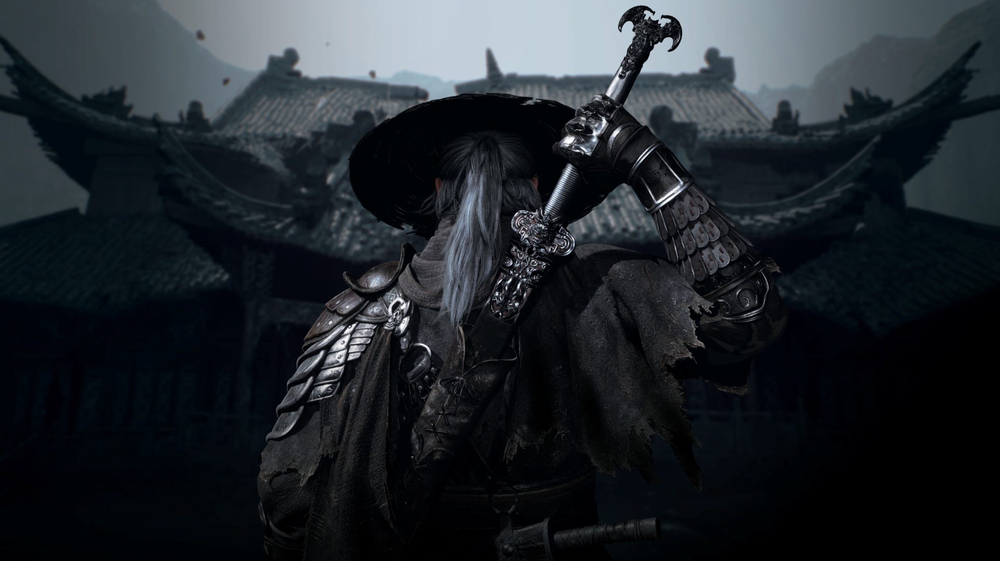

LANZAMIENTOS
Phantom Blade Zero llega a PS5 y PC con un combate Wuxia revolucionario
El aclamado título de acción desarrollado por S-Game debuta oficialmente. Destaca por su vertiginosa jugabilidad inspirada en las artes marciales chinas tradicionales y un apartado visual impactante impulsado por Unreal Engine 5.
29 OCTUBRE 2026 · 6 min de lectura Leer más